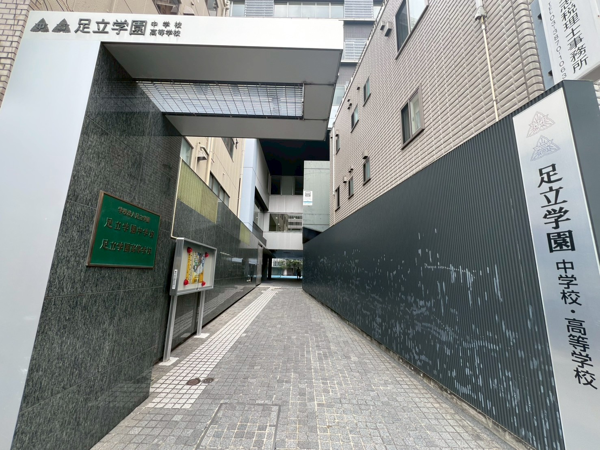
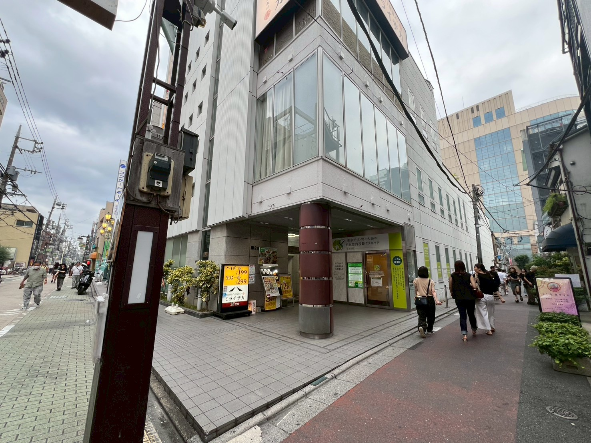
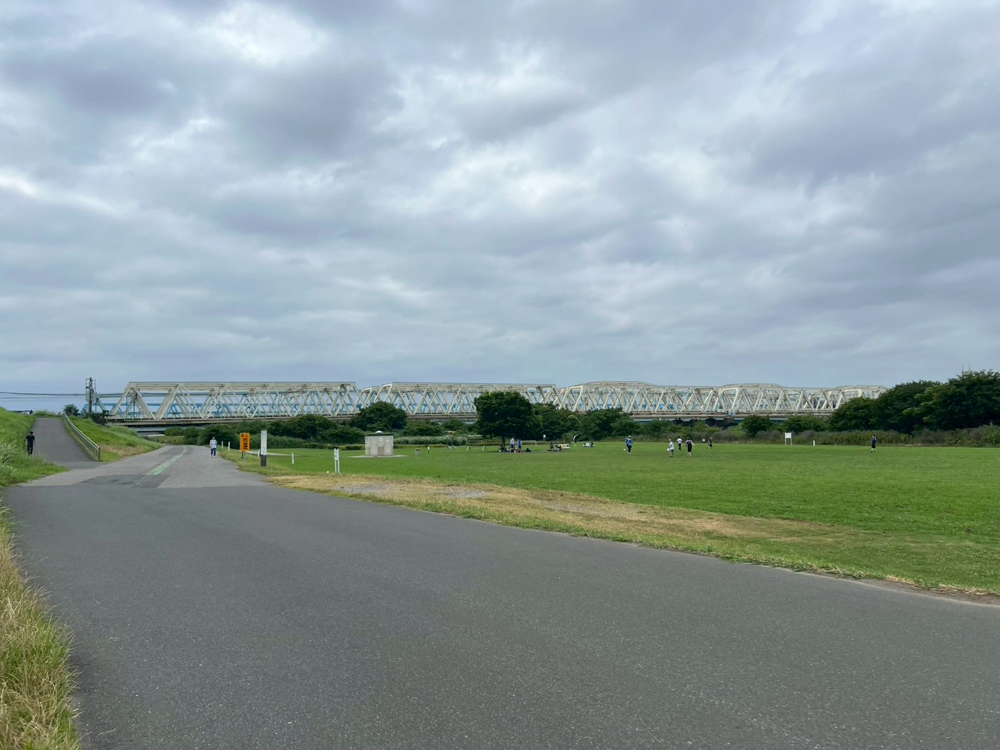
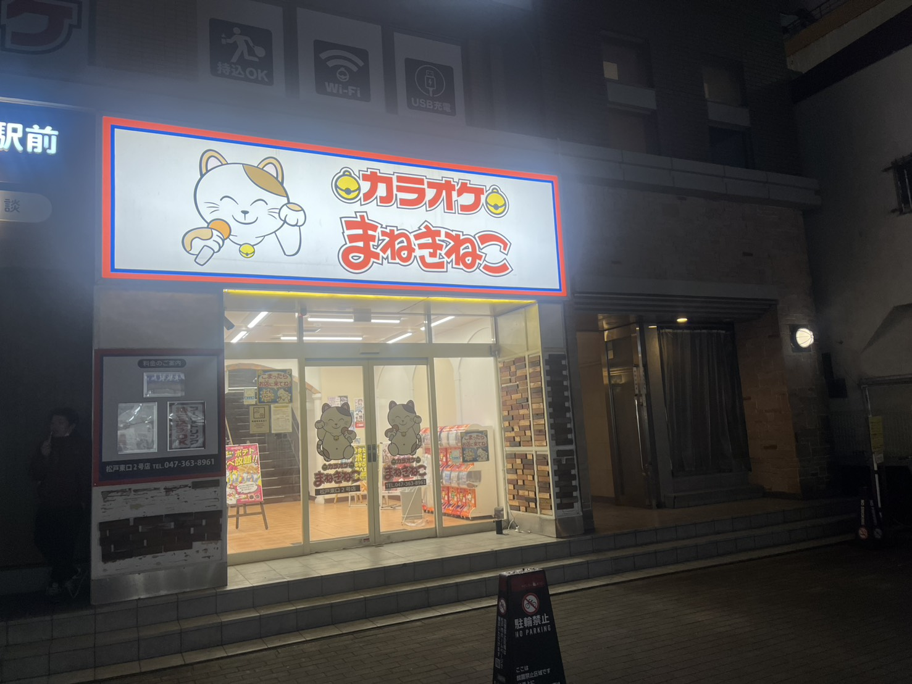
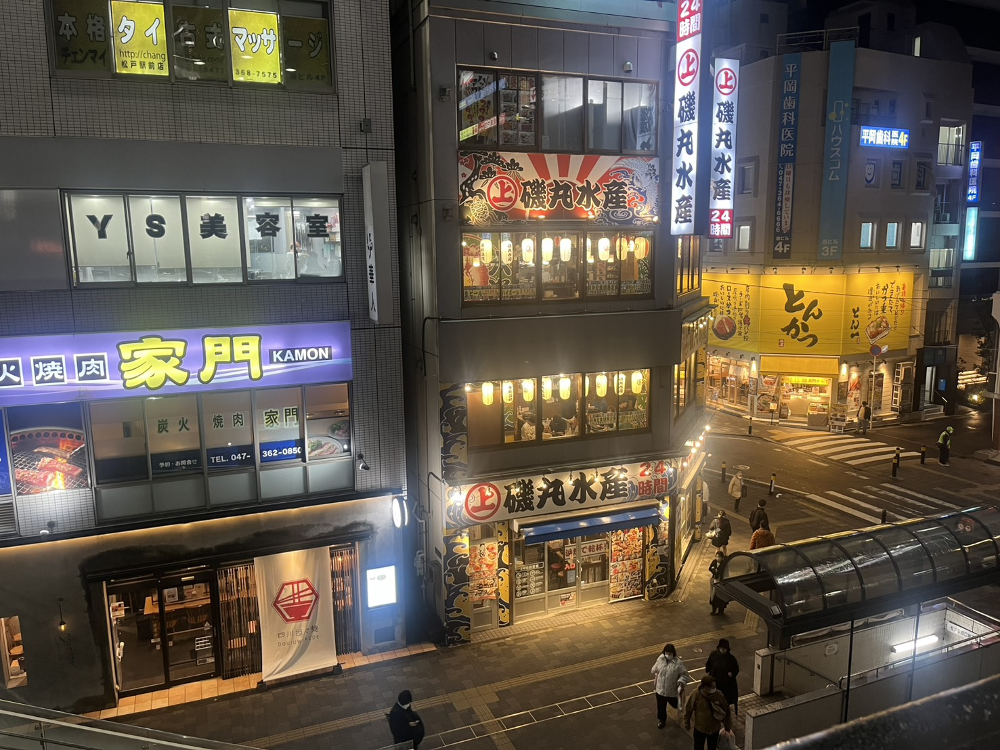
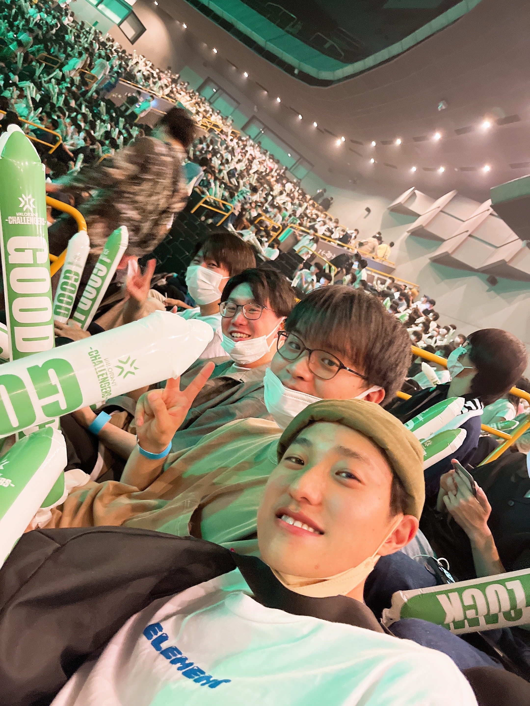
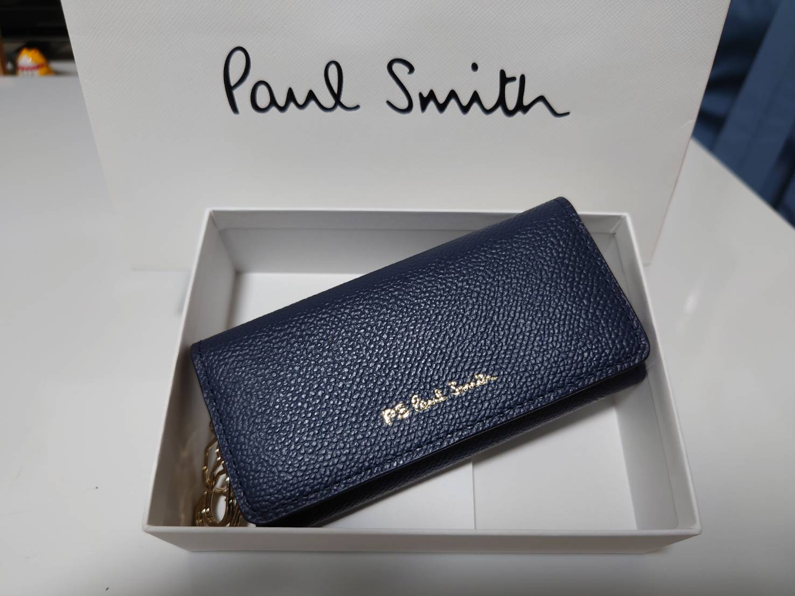

友人からのメッセージ
このページでは、新郎・新婦それぞれのご友人から頂いたメッセージを掲載しています。
お祝いの言葉や思い出のエピソードを、ぜひゆっくりご覧ください。
ギャラリー


学生編
-
 足立学園始まりの場所。小西と同じクラスになったのは中1だけか？
学内の思い出はテニス部（笑）とスキー同好会（大笑）あたりかね -
 夢庵学校帰りに立ち寄ったシリーズ その①
今思うと公共の場でとんでもない会話をしたものだ
今は別の店が入っててちょっぴり悲しい -
 土手スキー同好会の活動でよく行ったね
意外と書くことなし -
 歌うんだ村跡地学校帰りに立ち寄ったシリーズ その②
中学時代かな？週4,5回通ったね
俺の十八番は「U＆I」、小西の十八番は「からくりピエロ」
俺の推しは加納さん、小西の推しは三國さん
三國さんは松戸駅周辺に住んでたらしく、彼氏と歩いてるのを何度か目撃しました（） -
 バーガーキング跡地学校帰りに立ち寄ったシリーズ その③
テスト期間はよく通ったもんだ
コメダと迷ったけどこっちをチョイス
バーキンもコメダも今は別の建物が入ってて時の流れを感じるねえ -
 玉川学園
玉川学園試しに行ってみたけどクソ遠いわ よく通ったね
生田よりさらに奥だし、オンボロキャンパスなのかと思ったら、
お洒落なキャンパスに噴水まであってたまげた
大学時代って何したっけ？ 松戸で飲むのがメインだったかな？
意外と記憶にないや
社会人編
-
 VCT Tokyo今見るとよくわからんメンツだな
お兄さん最近valoやってますか？ 僕はやってません
社会人になってから写真全く撮ってなくて横転してます
これからは写真を撮ることを意識していきたいと思います -
 誕プレたけだ思い出シリーズその①
待鳥が社会人になってからもらった初の誕プレ
未だに使ってる -
 つるとんたん
つるとんたんたけだ思い出シリーズその②
大好きなうどんを食べながら丈哉ちゃんの話を初めて直接聞いた時！ -
 リラックマ
リラックマたけだ思い出シリーズその③
リラックマカフェとまふさんのライブは(多分欠かさず)二人で行ってる
最後に
ここまで見てくれてありがとうございました
一生に一度の機会ということで二人の結婚を少しでも彩れたらという想いで作成しました
デザインなんかはからっきしなので拙いものではありますが、
少しでも楽しんでくれたのならそれほど嬉しいことはないです
今は忙しい時期かと思うので、落ち着いたらまたご飯でも行きましょう
最後になりますが、ご結婚本当におめでとうございます
スペシャルサンクス
本ページの作成や撮影にご協力くださった皆さまへ、心より感謝申し上げます。
皆さまの御協力の甲斐あって、このページを彩ってくれました。
石井
写真撮影協力してくれてありがとう写真を撮る過程で当時のことを思い出すことができたし、
撮影した時間自体もまた別の思い出になりました
武田さん
新婦側のメッセージを募ってくれて本当にありがとうございました武田さんの協力がなければここまで良いものはできなかったと思います